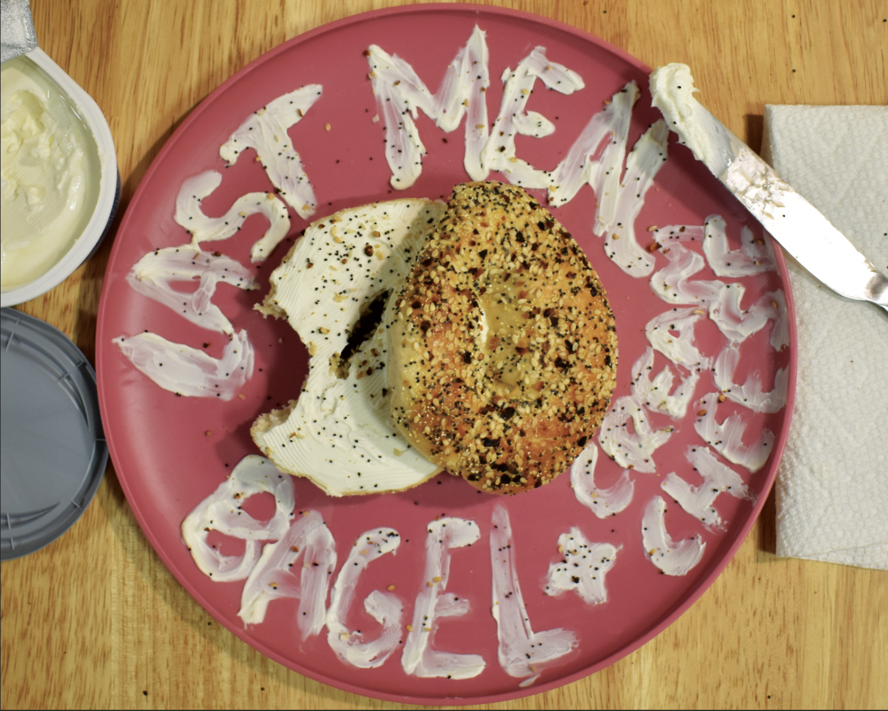

Anna Kippenberger
Last Meal, Bagel And Cream Cheese | 2024
Combining text with physical material, this original memoir title "Last Meal, Bagel And Cream Cheese" was created with, as you can assume, cream cheese. The feeling of the phrase seemed to make a last decision seem every day, and typical. To convey this the shot was taken using items in my kitchen and where I eat.
